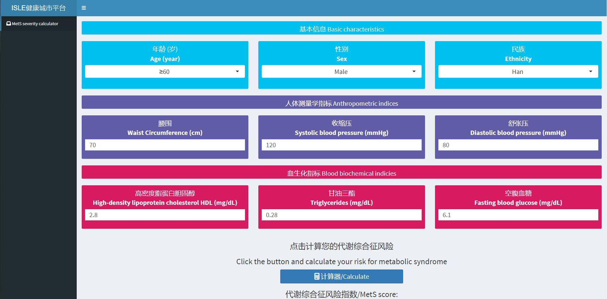

Development and validation of an age-sex-ethnicity-specific metabolic syndrome score in the Chinese adults

Abstract
Metabolic syndrome (MetS) is characterized by metabolic dysfunctions and could predict future risk for cardiovascular diseases (CVDs). However, the traditionally defined dichotomous MetS neither reflected MetS severity nor considered demographic variations. Here we develop a continuous, age-sex-ethnicity-specific MetS score based on continuous measures of the five metabolic dysfunctions (waist circumference [WC], triglycerides [TG], high-density lipoprotein cholesterol [HDL-C], mean arterial pressure [MAP], and fasting blood glucose [FBG]). We find that the weights of metabolic dysfunctions in the score vary across age-sex-ethnicity-specific subgroups, with higher weights for TG, HDL-C, and WC. Each unit increase in the score is associated with increased risks for hyperlipidemia, diabetes, and hypertension, and elevated levels of HbA1c, cholesterol, body mass index, and serum uric acid. The score shows high sensitivity and accuracy for detecting CVD-related risk factors and is validated in different geographical regions. Our study would advance early identification of CVD risks and, more broadly, preventive medicine and sustainable development goals.
We develop a continuous, age-sex-ethnicity-specific Metabolic syndrome (MetS) score based on continuous measures of the five metabolic dysfunctions (waist circumference [WC], triglycerides [TG], high-density lipoprotein cholesterol [HDL-C], mean arterial pressure [MAP], and fasting blood glucose [FBG]).

Figure 1. An overview of the study design.

Figure 2 Shiny app of age-sex-ethnicity-specific MetS score.